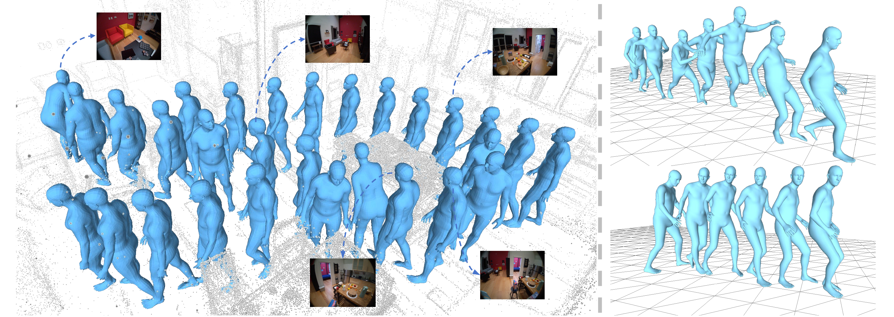
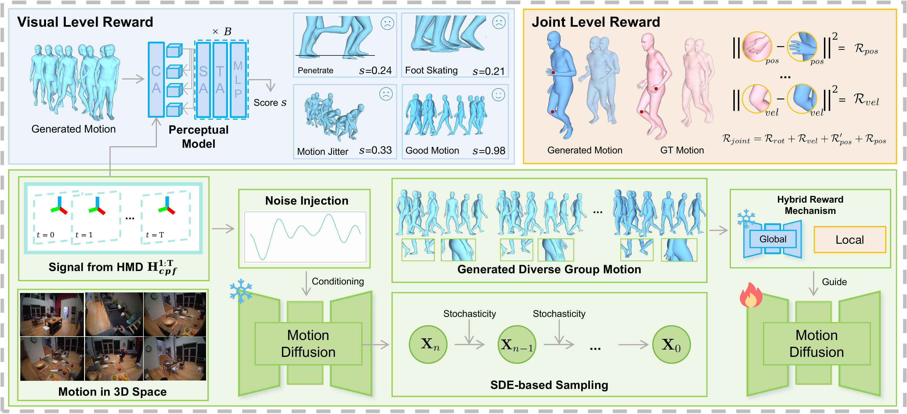
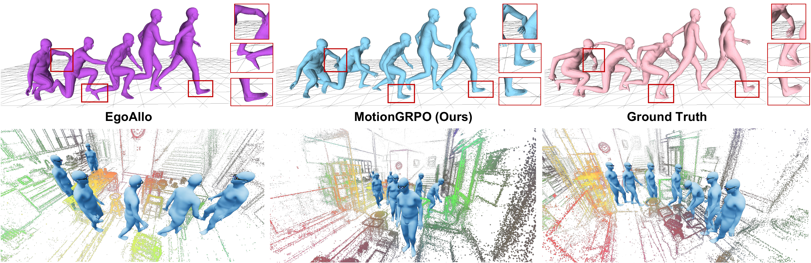

A reinforcement learning framework that post-trains diffusion models to recover high-fidelity full-body 3D human motion from head-mounted device signals.
The Hong Kong University of Science and Technology (Guangzhou) · Nanyang Technological University
Given head trajectory signals and optional egocentric images from a head-mounted device, MotionGRPO recovers high-fidelity full-body 3D human motion in 3D scenes.

Recovering full-body 3D human motion from sparse head-mounted device signals.
This paper studies full-body 3D human motion recovery from head-mounted device signals. Existing diffusion-based methods often rely on global distribution matching, leading to local joint reconstruction errors. We propose MotionGRPO, a novel framework leveraging reinforcement learning post-training to inject fine-grained guidance into the diffusion process. Technically, we model diffusion sampling as a Markov decision process optimized via Group Relative Policy Optimization (GRPO). To this end, we introduce a hybrid reward mechanism that combines a learned conditioned perceptual model for global visual plausibility and explicit constraints for local joint precision. Our key technical insight is that policy optimization in diffusion-based recovery suffers from vanishing gradients due to limited intra-group sample diversity. To address this, we further introduce a noise-injection strategy that explicitly increases sample variance and stabilizes learning. Extensive experiments demonstrate that MotionGRPO achieves state-of-the-art performance with superior visual fidelity.
We propose MotionGRPO, which optimizes a hybrid reward combining a trajectory-conditioned perceptual model for global plausibility and fine-grained objectives for precise joint alignment.
We identify the "low intra-group diversity" bottleneck in GRPO and introduce temporally smoothed noise injection to increase output diversity and stabilize training.
Extensive experiments on AMASS and RICH benchmarks show superior visual fidelity and strong generalization to real-world scenarios.
MotionGRPO formulates diffusion sampling as a Markov Decision Process (MDP), optimized via GRPO with a hybrid reward mechanism. A noise-injection strategy overcomes the low intra-group diversity bottleneck.

A trajectory-conditioned perceptual model trained with online contrastive learning detects visual artifacts like foot skating and motion jitter. Combined with explicit sub-rewards on joint positions, rotations, and velocities, the hybrid reward guides the diffusion model toward both visually plausible and geometrically accurate motions.
Directly applying GRPO to motion recovery suffers from vanishing gradients because strong conditioning from head signals constrains the output space. Our temporally smoothed noise-injection strategy simulates out-of-distribution inputs, increasing model uncertainty and output diversity for effective GRPO optimization.
MotionGRPO achieves state-of-the-art performance on both AMASS and RICH benchmarks.
| Method | AMASS Dataset | RICH Dataset | ||||||||||||
|---|---|---|---|---|---|---|---|---|---|---|---|---|---|---|
| Joint Accuracy | Visual Quality | Joint Accuracy | Visual Quality | |||||||||||
| MPJPE (mm) ↓ |
PA-MPJPE (mm) ↓ |
MPJVE (mm/s) ↓ |
MPJRE (°) ↓ |
Jitter ↓ |
GP (m) ↓ |
FS (m) ↓ |
MPJPE (mm) ↓ |
PA-MPJPE (mm) ↓ |
MPJVE (mm/s) ↓ |
MPJRE (°) ↓ |
Jitter ↓ |
GP (m) ↓ |
FS (m) ↓ |
|
| EgoEgo | 177.231 | 152.125 | 588.661 | 9.457 | 2.643 | 1.331 | 1.241 | 221.450 | 196.223 | 572.331 | 13.312 | 5.187 | 4.357 | 1.021 |
| EgoAllo | 124.985 | 103.958 | 553.221 | 8.777 | 2.394 | 1.143 | 1.290 | 192.686 | 172.724 | 506.992 | 12.734 | 4.135 | 4.145 | 1.094 |
| EgoAlloℵ | 121.651 | 101.034 | 483.471 | 8.728 | 1.455 | 1.099 | 0.479 | 190.000 | 169.838 | 407.628 | 12.638 | 1.880 | 4.438 | 0.223 |
| MotionGRPO | 114.207 | 95.512 | 531.217 | 8.413 | 2.000 | 0.901 | 1.169 | 187.223 | 169.146 | 477.344 | 11.944 | 3.685 | 3.161 | 1.008 |
| MotionGRPOℵ | 111.776 | 93.702 | 461.702 | 8.330 | 1.309 | 0.963 | 0.399 | 184.992 | 167.032 | 378.423 | 11.886 | 1.614 | 3.156 | 0.199 |
Bold: best, Underline: second best. ℵ denotes test-time post-processing. ↓ lower is better.

Qualitative comparison on AMASS and ADT datasets. MotionGRPO produces more accurate joint alignment and fewer visual artifacts, with strong generalization to real-world scenarios.
| Method | AMASS Dataset | RICH Dataset | ||||||||||||
|---|---|---|---|---|---|---|---|---|---|---|---|---|---|---|
| MPJPE ↓ | PA-MPJPE ↓ | MPJVE ↓ | MPJRE ↓ | Jitter ↓ | GP ↓ | FS ↓ | MPJPE ↓ | PA-MPJPE ↓ | MPJVE ↓ | MPJRE ↓ | Jitter ↓ | GP ↓ | FS ↓ | |
| Baseline | 124.985 | 103.958 | 553.221 | 8.777 | 2.394 | 1.143 | 1.290 | 192.686 | 172.724 | 506.992 | 12.734 | 4.135 | 4.145 | 1.094 |
| + Vanilla GRPO | 117.418 | 97.945 | 543.012 | 8.403 | 2.084 | 0.999 | 1.272 | 190.248 | 171.223 | 494.125 | 12.369 | 3.793 | 3.633 | 1.076 |
| + Visual Reward | 116.549 | 96.729 | 546.128 | 8.427 | 2.014 | 0.886 | 1.221 | 189.103 | 170.002 | 497.480 | 12.268 | 3.684 | 3.225 | 1.044 |
| + Perlin Noise | 114.207 | 95.512 | 531.217 | 8.413 | 2.000 | 0.901 | 1.169 | 187.223 | 169.146 | 477.344 | 11.944 | 3.685 | 3.161 | 1.008 |
Ablation study validating each component: Vanilla GRPO → Visual Reward → Perlin Noise Injection. Each addition progressively improves both joint accuracy and visual quality.
If you find this work useful, please cite our paper.